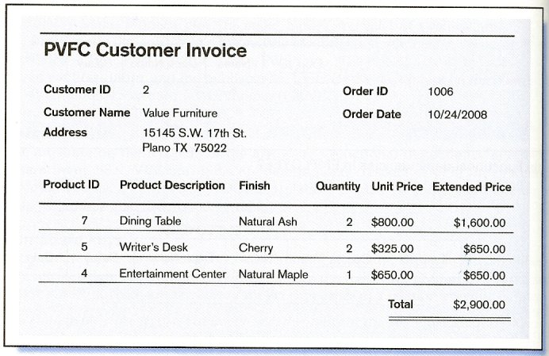
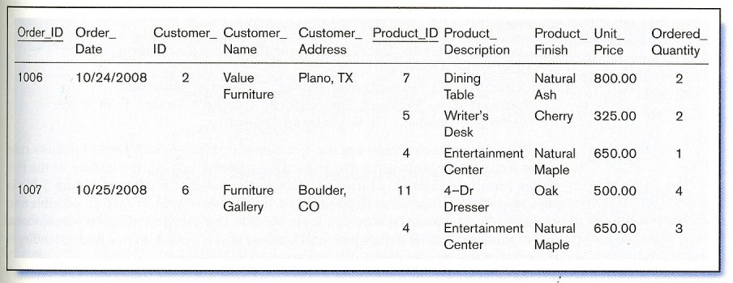
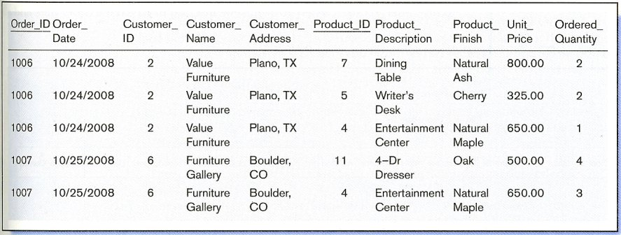
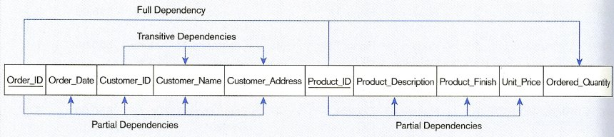
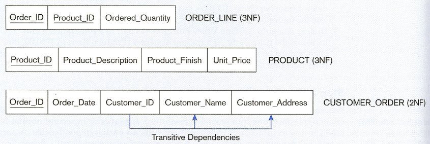
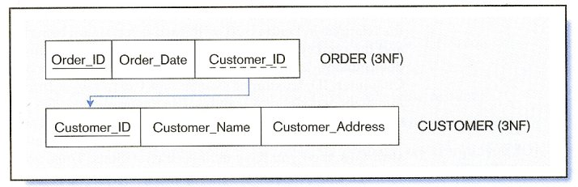

Normalization Example
ทบทวน ความหมาย Function Dependency
Functional Dependency: The value of one attribute (the determinant) determines the value of another attribute.
- A -> B reads “Attribute B is functionally dependent on A”
- A -> B means if two rows have same value of A they necessarily have same value of B
R ( A (key) , B, C, D)
A -> B
จะเรียก A ว่า Determinant และ เรียก B ว่า Dependent
Step 0 ตัวอย่าง invoice

สร้างตาราง เก็บข้อมูล จาก invoice
Step 1 แปลง เป็น 1NF ด้วยการ กำจัด กลุ่มที่มีความซ้ำช้อนระบุ ค่าของ function dependency ทั้งหมด โดยการระบุ Primary ของแต่ละ relation จากตัวอย่างแบ่งได้ 4 กลุ่ม (Determinant)
| Order_ID → Order_Date, Customer_ID, Customer_Name, Customer_Address Customer_ID → Customer_Name, Customer_Address Product_ID → Product_Description, Product_Finish, Unit_Price Order_ID, Product_ID → Ordered_Quantity |
|---|
แสดงความสัมพันธ์ดังนี้

Step 2 แปลงเป็น 2NF ด้วยการ แยกกลุ่มของ partial dependencies (key# และกลุ่มของ attributes ) นำมาสร้างตารางใหม่

Step 3 แปลงเป็น 3NF ด้วยการแยกกลุ่ม Transitive dependecies มาสร้างตารางใหม่
transitive dependency (ความสัมพันธ์ทางอ้อม) คือ กลุ่มของ attribute ที่ไม่ใช่ key แต่มีความสัมพันธ์
transitive dependency มีความสัมพันธ์ แบบทางอ้อม สามารถเขียน แทนได้ด้วย
X -> Z คือ transitive dependency ก็ต่อเมื่อ X -> Y , Y -> Z อ่านได้ว่า X มีความสัมพันธ์ทางอ้อม
